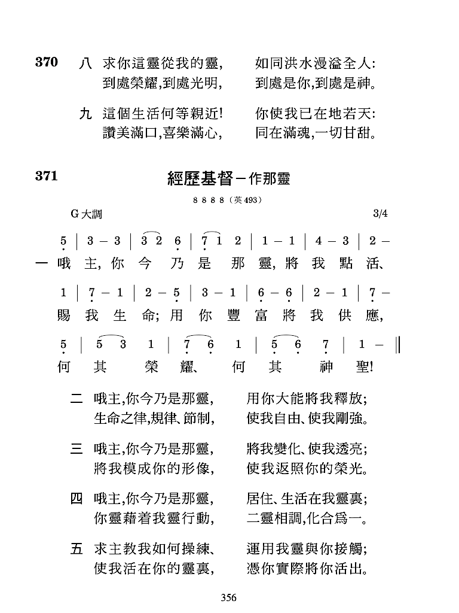

第七題
基督是靈
林前 15:45 末後的亞當成了賜生命的靈。
林後 3:17 主就是那靈；主的靈在那裏，那裏
就有自由。
耶穌基督是神的兒子，人類的救主。祂大約
兩千年前來到世上，在地上活出一個真實的
人。祂的一生是完全的人生，彰顯最高的道德
標準。過了三十三年半無罪的人生後，祂被釘
在十字架上，為要除去世人的罪。（約一 29。）
我們要來看，祂完成奇妙救贖的工作之後，發
生了甚麼事。
復活的基督是靈，活在我們的靈裏
基督進入死，但祂並沒有留在那裏。第三
天，祂在靈性上並在肉身上復活了。（林前十五
3～4。）許多人目睹祂的復活，見了祂，和祂
1
說話，與祂同行。他們為這一個歷兩千年而不
動搖的歷史事實，作了有力的見證。（5～7。）
蘇格拉底死了，拿破侖死了，亞歷山大大帝死
了，馬克斯死了，穆罕默德、佛陀、孔子都死
了，但耶穌基督仍舊活著！祂的墳墓是空的。
祂今天活在千萬人的靈裏。
瞭解靈最好的路是舉例說明。想想你四周的
空氣。空氣到處都是，便利可得。不管你在東
方或西方，在房間或市場，空氣總是與你同
在。聖經將靈比作空氣。事實上，『靈』的希臘
原文是紐瑪（pneuma），可翻譯作『氣息』或
『風』。在主復活的晚上，祂來到門徒中間，作
了一件非常奇特的事。祂向他們吹了一口氣，
說，『你們受聖靈。』（約二十 22。）祂向門徒
吹的那一口聖氣，正是在復活中成為賜生命之
靈的主自己。
那靈使我們的生命充實，滿了意義
2
當基督活在地上時，祂對門徒不是盡然方便
接近。祂在加利利，就不能在耶路撒冷。祂受
時間、空間的限制，因而不能在任一時間與所
有的人同在。
藉著那靈，我們得著愛、光、真理、生命、
喜樂、能力、和神一切的屬性。我們裏面若沒
有那靈，我們的生命就瀰漫著黑暗、輭弱和窒
息；但是那靈將三一神應用到我們身上，就叫
我們的生命充實，滿了意義。
沒有一件事比呼吸更簡單。一個人可以不懂
高深的理論，但只要他是人，就會呼吸。呼吸
是最普遍的本能；任何一種生物都能呼吸。基
督使祂自己變得如此方便，叫任何人都可以接
受並經歷祂。人好比輪胎，那靈好比空氣。許
多人過著一種『癟胎』的生活；他們在人生的
旅途上癟氣的拖行。我們所需要的是屬天的氣
—賜生命之靈的基督。有了祂，我們就能走得
3
平順暢快，並且全人充滿屬天的氣！
藉著呼求主名
而經歷神一切的所是
當人相信主耶穌，那靈就進到他裏面，並活
在他裏面。提後四章二十二節說，主耶穌基督
與我們的靈同在。我們無須到天上去找神，也
不必到某地朝聖接觸神。現今最神聖的地方，
就在我們的靈裏。房子安裝了電之後，人所要
作的，乃是打開開關。今天，靈已經『安裝』
完成—基督已經完成了一切的工作，並且成了
賜生命的靈，現今無所不在。當我們呼求主
名，我們的靈就『打開開關』，我們就能經歷神
一切的所是。
我們可以再用另一個例子，來解釋靈的奧
祕。有一年夏天，我從市場上買了一個西瓜。
這個西瓜很大。為了把它帶回家，我流了滿身
大汗。我的目的是要吃西瓜，消化西瓜。為了
4
這個目的，首先，我必須先把西瓜切成片。為
要更容易吸收西瓜，我再把西瓜切片壓成西瓜
汁。大西瓜藉著變成西瓜汁，成了我的享受。
神本來在天上；祂可比喻作這個大的、未切開
的西瓜。有一天，祂成為一個人，釘在十字架
上。藉著祂的釘死，祂被『切片』了。但整個
過程並未停在這裏；祂死後復活，改變形狀，
成為靈的形態。這就像將西瓜切片壓成西瓜
汁。那靈如同西瓜的汁液。經過這個過程，神
對我們就非常便利了。今天，我們敬拜的神不
是『未切開』的神；祂是一位『經過過程』的
神。換言之，祂已經經過過程，成為賜生命的
靈。現今我們不需汗流浹背來接觸祂，因祂對
我們已是如此可享，如此便利。
現今我們可以白白的喝那靈
約翰福音記載，在一個最大宗教節期的末
日，基督站著高聲說，人若渴了，可以到祂這
5
裏來喝。然後基督說，『信入我的人，就如經上
所說，從他腹中要流出活水的江河來。』（七 37
～38。）在這裏，那靈被比喻作『活水的江
河』。基督說這話時還沒有活水，因為祂尚未經
過死和復活的過程。但祂死而復活之後，這過
程就完成了。那靈的活水現今就在這裏，我們
可以白白的暢飲。這活水完全解了我們裏面的
乾渴。（神經綸的福音—基督是靈和生命，一至
九頁。）
參讀：神經綸的福音—基督是靈和生命；正常
的基督徒信仰，基督與新生命，第三
篇；聖經中的五大奧祕，第三至四章。
6

7